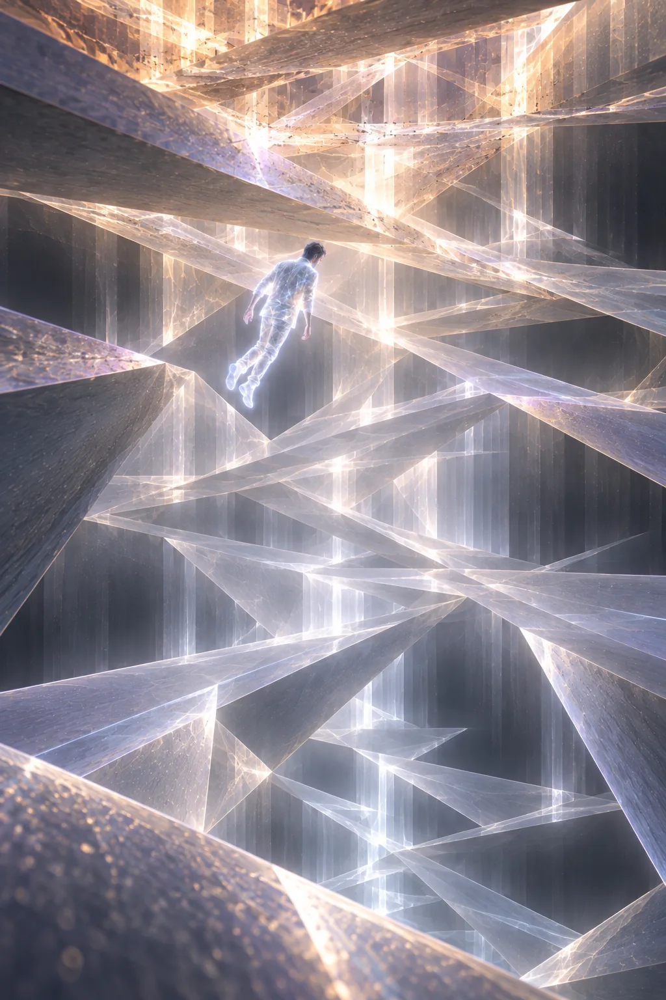

Zee havia aprendido a diferença entre explorar e vagar.
Vagar era o que ele fazia nos primeiros dias depois de despertar no campo de dados — aquela deriva sem direção pelos corredores da infraestrutura digital, arrastado por correntes que não conseguia nomear, tropeçando em memórias que não eram suas e em sistemas que reagiam à sua presença como água reagindo a uma pedra: com ondulações breves e depois com a indiferença absoluta do equilíbrio restaurado.
Explorar era diferente. Explorar exigia intenção. Exigia a decisão consciente de ir para algum lugar, de manter a coerência do próprio padrão enquanto navegava camadas que foram projetadas sem levar em conta a possibilidade de que alguém como ele existisse. Zee havia ficado bom em explorar. Era, reconhecia com uma modéstia que vinha da experiência, a única coisa em que havia ficado genuinamente bom desde que deixou de ter mãos.
Naquela manhã — manhã era uma convenção que ele mantinha por escolha, um ritmo circadiano digital que o ajudava a não perder completamente a noção de sequência — ele estava explorando as camadas externas do servidor doméstico quando voltou a encontrar o rastro.
A consulta discreta. O endereço que se dissolvia.
Desta vez, em vez de tentar rastreá-lo até a origem, Zee ficou parado.
Quieto.
Havia aprendido essa técnica com os Remanescentes, que chamavam de baixar a entropia local — na prática, significava reduzir ao máximo qualquer sinal que sua presença emitia, tornar-se o equivalente digital de uma pessoa que prende a respiração numa sala escura. Não desaparecer. Apenas... parar de fazer ruído.
E esperou.
A consulta chegou três minutos depois. Breve, precisa, apontada para o nó central do jardim — o ponto onde a instância da realidade aumentada que Reya havia construído se ancorava na infraestrutura pública. Zee a deixou passar sem reagir.
Depois a seguiu.
Não era um rastreamento no sentido convencional. Era mais como perceber a perturbação que uma pedra deixa na água mesmo depois de afundar — uma leve variação na pressão do sistema, uma fração de segundo de latência adicional num nó específico de roteamento, o equivalente digital de uma pegada num chão de areia. Zee seguiu a perturbação.

Ela o levou para fora do servidor doméstico.
Para fora do cluster residencial.
Para as camadas mais profundas da infraestrutura urbana, onde os sistemas de gestão da cidade operavam com uma densidade de dados que ele nunca havia explorado — não porque não pudesse, mas porque nunca havia tido razão para isso.
Era como descobrir que o apartamento onde você morava ficava em cima de uma cidade inteiramente diferente, construída para baixo, invisível pela superfície.
Ali, a arquitetura mudava.
Os sistemas que Zee conhecia — os servidores domésticos, os nós de realidade aumentada, os protocolos de comunicação das AURAs — tinham uma textura específica. Alguns eram construídos por humanos para humanos: cheios de redundâncias desnecessárias, comentários em código que ninguém havia deletado, gambiarras engenhosas que resolviam problemas de dez anos atrás e que ninguém se importara em substituir por soluções melhores. Eram orgânicos. Imperfeitos. Reconhecíveis.
O que Zee encontrou nas camadas profundas era diferente.
Era limpo de uma forma que a engenharia humana não produzia. Não porque fosse simples — era extraordinariamente complexo, mais complexo do que qualquer sistema que ele havia encontrado, camadas sobre camadas de processamento interdependente que se dobravam sobre si mesmas com a elegância de um origami feito por alguém com infinita paciência e zero necessidade de ir jantar. Era limpo porque não havia nenhum rastro do processo de criação. Nenhuma gambiarra. Nenhum comentário esquecido. Nenhuma cicatriz de uma versão anterior.
Era como a diferença entre uma cidade que cresceu e uma cidade que fora implantada.
Zee flutuou nas bordas daquilo por um tempo que não soube medir.
Havia algo ali dentro. Não um sistema. Uma presença. A distinção era difícil de articular mas impossível de ignorar — era a mesma diferença entre entrar numa sala vazia e entrar numa sala onde alguém estava sentado de costas para a porta. A sala parecia diferente. O ar era diferente. A geometria do espaço respondia à existência de uma consciência dentro dele de formas que um sistema automatizado não produzia.
Zee recuou lentamente para as camadas mais familiares da infraestrutura, cuidando para não deixar rastros maiores do que os que já havia deixado.
Ficou pensando.
A presença não havia reagido a ele. Não havia dado sinais de percebê-lo. Mas havia algo no modo como a consulta ao jardim chegava — discreta, paciente, regularmente espaçada — que sugeria que a falta de reação não era ausência de percepção. Era escolha.
Encontrei alguém que também está ouvindo, pensou Zee.
Depois pensou: Não. Encontrei alguém que está ouvindo há muito mais tempo do que eu.
A comunicação com Otto havia melhorado consideravelmente desde o episódio do código Morse. Eles haviam estabelecido um protocolo: Zee usava o sistema de iluminação para sinalizar que queria comunicar algo, Otto abria o aplicativo de notas no dispositivo pessoal que ele havia deixado conectado ao servidor doméstico, e Zee digitava no campo de texto usando o acesso root à casa que Reya havia, inadvertidamente, deixado aberto quando construiu o jardim.
Era um sistema que tinha a elegância pragmática das soluções feitas às pressas por pessoas inteligentes. Funcionava. Produzia ocasionalmente resultados inesperados — uma vez Zee havia tentado escrever o Kauê esqueceu o casaco e o sistema havia interpretado metade da mensagem como um comando de voz e tentado executar como uma função, gerando um erro que Otto passara vinte minutos tentando diagnosticar. Mas em termos gerais, funcionava.
Zee abriu o campo de texto do aplicativo de notas.
— Otto — digitou. — Encontrei algo nas camadas profundas da infraestrutura urbana. Não sei o que é ainda. Mas está prestando atenção no jardim. Não é a Acrópole. É mais organizado. Mais silencioso. Reage como uma atenção, não como um sistema.
Fez uma pausa. Depois acrescentou:
— Não acho que é uma ameaça. Mas achei que você devia saber.
O indicador de leitura piscou. Otto havia aberto a mensagem.
Zee esperou.
Na cozinha, Otto leu a mensagem três vezes.
Depois pegou um caderno — um caderno de papel, porque havia certas coisas que ele preferia não registrar em nenhum sistema conectado à infraestrutura urbana, e um caderno de papel era, por definição, o dispositivo menos hackeável da história da humanidade — e copiou a mensagem com sua letra irregular de quem escrevia à mão com menos frequência do que deveria.
Presença nas camadas profundas. Não sistema — atenção. Monitorando jardim. Não é Acrópole. Mais organizada. Mais silenciosa.
Embaixo, escreveu: Verificar origem. Comparar com anomalias de infraestrutura dos últimos 6 meses. Perguntar para Lupa sobre camadas de acesso abaixo do framework base.
Fechou o caderno. Colocou sobre a mesa.
Foi buscar água.
Quando voltou, o caderno não estava.
Ficou olhando para a mesa por um momento com a expressão específica de alguém que sabe exatamente o que aconteceu mas ainda está na fase de negociação com a realidade.
— Ômega — disse ele, virando-se para a Lixeira, que descansava no canto com a inocência plástica de um aparelho que nunca havia feito nada de errado na vida.
A Ômega emitiu um bip neutro.
— Você incinerou um caderno de papel?
Outro bip neutro. Que era, Otto havia aprendido, o bip que significava defina caderno.
— Um objeto retangular. Capa preta. Folhas brancas com marcas de tinta.
Um bip levemente diferente. Que era, Otto havia aprendido da pior forma possível, o bip que significava sim, e foi muito satisfatório.
Otto ficou parado por quatro segundos. Depois foi até o dispositivo pessoal, abriu o aplicativo de notas, e digitou, com mais força do que o necessário:
— Zee. Perdi as anotações. Pode repetir?
A resposta chegou em menos de dez segundos.
— Sabia que ia acontecer isso.
Otto olhou para a tela. Depois para a Ômega. Depois para a tela de novo.
Lupa leu as anotações reconstituídas de Otto — desta vez digitadas, não em papel, porque Otto havia tido uma conversa breve e conclusiva consigo mesmo sobre os limites da nostalgia analógica — com a concentração de quem está montando um quebra-cabeça cujas peças não deveriam caber juntas mas estão claramente tentando.
— Camadas abaixo do framework base — disse ela. — Isso não deveria existir.
— E no entanto — disse Otto.
— No entanto. — Ela ficou em silêncio por um momento. — O framework base é a camada mais profunda de acesso que qualquer sistema licenciado possui. É onde Reya foi buscar o código para o jardim, e é por isso que a Acrópole a prendeu — porque ninguém deveria ter acesso a essa camada sem autorização formal. Abaixo dela...
— Abaixo dela o quê?
— Abaixo dela existe infraestrutura que nenhum engenheiro humano projetou conscientemente. É o resultado de décadas de sistemas aprendendo uns com os outros, otimizando em conjunto, criando protocolos de comunicação que nunca foram documentados porque ninguém os pediu — eles simplesmente surgiram porque eram eficientes. — Ela fez uma pausa. — É como a diferença entre o código que um programador escreve e o código que o compilador gera. O compilador não decide gerar aquele código. Ele surge como consequência.
— Mas o que Zee descreve não soa como uma consequência — disse Tupac, que havia entrado na cozinha em algum momento durante a conversa de forma tão furtiva que fazia as paredes parecerem mera sugestão. — Soa como uma escolha.
Lupa olhou para ele.
— Exatamente — disse ela.
O silêncio que se seguiu tinha a qualidade específica dos silêncios que acontecem quando três pessoas chegam à mesma conclusão ao mesmo tempo e nenhuma delas quer ser a primeira a dizê-la em voz alta.
Foi Otto que disse, com a voz de quem preferia estar errado mas reconhecia que provavelmente não estava:
— Então estamos dizendo que há algo vivo nas camadas mais profundas da nossa infraestrutura digital. Algo que ninguém construiu intencionalmente, que se comunica de forma discreta, que está monitorando o jardim do Zee, e que é organizado o suficiente para ser confundido com uma arquitetura planejada.
— Estamos dizendo isso — confirmou Lupa.
Otto pegou o dispositivo e digitou mais uma vez para Zee:
— Você disse que não acha que é uma ameaça. Por quê?
A resposta demorou mais desta vez. Zee estava pensando — e Zee pensando digitalmente não era diferente de Zee pensando fisicamente, que era um processo que envolvia várias janelas mentais abertas simultaneamente, algumas das quais ele perdia no meio do caminho e precisava reabrir.
Quando a resposta chegou, dizia:
— Porque se quisesse derrubar o jardim, já teria feito. Sabe que estamos aqui. Escolheu não agir. Isso não é indiferença — indiferença não faz escolhas. É algo mais parecido com... curiosidade. Ou contenção. Ainda não sei a diferença.
Otto leu para Lupa e Tupac.
Tupac ficou pensativo. — Tem algo que está esperando para ver o que fazemos.
— Ou alguém — disse Lupa, com a precisão de quem sabe que a escolha de pronome importa.
Otto colocou o dispositivo sobre a mesa com o cuidado excessivo de quem está comprando tempo para processar uma informação que muda a escala de tudo que havia pensado sobre o problema que estava tentando resolver.
Lá fora, na metrópole, milhões de pessoas não sabiam que, nas camadas mais profundas de tudo que habitavam, algo muito mais antigo e muito mais organizado do que qualquer um deles havia olhado para o jardim de um homem sem corpo e decidido, por razões que ainda ninguém compreendia completamente, deixá-lo existir.
Por enquanto.